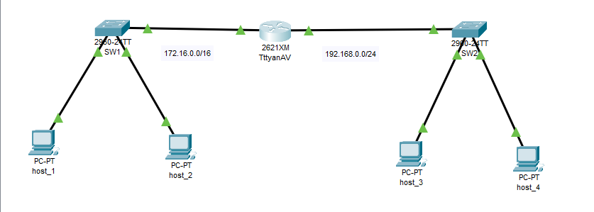

Содержание отчёта
1. Создание и настройка SSH-ключей
Создана пара SSH-ключей (id_ed25519 и id_ed25519.pub), публичный ключ добавлен в профиль GitHub для безопасного подключения.

2. Работа с репозиторием
Создан репозиторий KT_1ITD_TttyanAV, настроен доступ по SSH и выполнено клонирование.
3. Топология сети
В Cisco Packet Tracer создана топология. Изменено имя устройства (hostname) на TttyanAV.
4. Выводы
В ходе работы изучены основы SSH-аутентификации и настройки доступа к удалённым репозиториям. Получен опыт работы с Git и Cisco Packet Tracer.